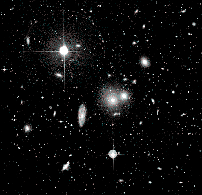
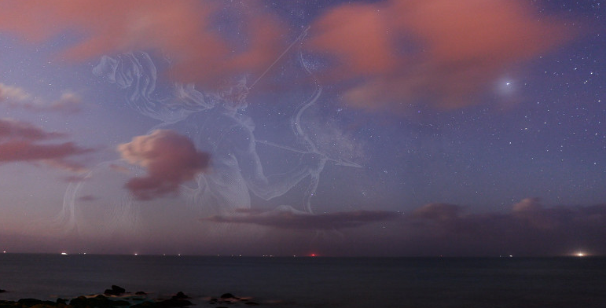
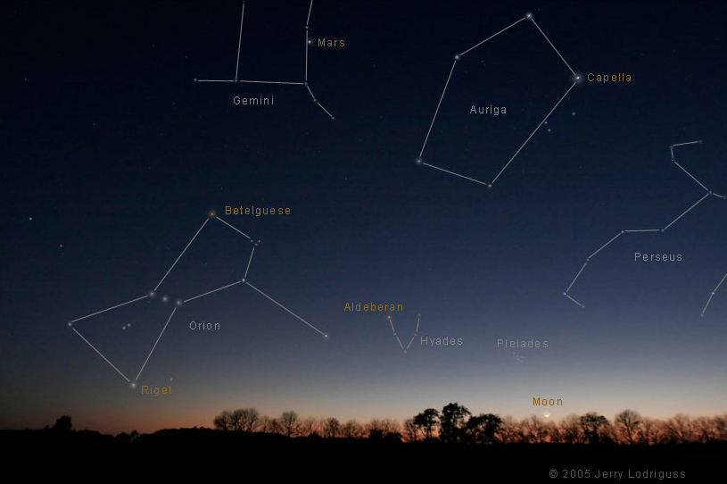

A constellation is a group of stars in the visible night sky that form a picture if imaginary lines between the stars are connected. Literally, the Latin prefix con means with and the Latin word stella means star.
 How many constellations are there?
The night sky is officially divided into 88 constellations according to the International Astronomical Union.
Are all constellations roughly the same shape and size?
Constellations come in all shapes and sizes. The largest constellation, Hydra, contains the Hydra Cluster, which contains 157 galaxies! The photograph to the left is a picture of the Hydra Cluster.
Do constellations really look like what they represent?
Constellations are named after the shape that they form. However, it often takes a bit of imagination to draw out the shape that the constellation represents. Constellations are not named after everyday objects, but rather ancient ideas and figures that are generally foreign to us in modern times. This makes it even harder for us to discern what the constellation pattern represents in the sky.
Sagittarius, the zodiac sign symbolized by the archer, is one of the 88 constellations. In fact, each sign of the zodiac is a constellation that the sun seems to pass through each year. Our galaxy actually lies in the center of the Sagittarius constellation. The form of an archer that comprises the Sagittarius constellation is clearly delineated below with the stars connected by superimposed lines.

Why do we use constellations?
Astronomers use constellations to break the sky into sections and refer to specific locations. Below is a picture of several constellations written in a white font along with stars that they hold written in an orange font.

The Big Dipper is located in the constellation of Ursa Major. Sirius, the brightest star in the sky, is located in the Canis Major constellation. Canis Major, literally Big Dog, is one of Orion's hunting dogs from Greek mythology. Canopus, the second largest star, is located in the Carina constellation. The following video, captured by the Hubble Telescope, shows Carina Nebula's place in the sky at 0:05. It clearly depicts the nebula's place relative to constellations.
What is the origin of constellation names?
Many constellations are named after princesses, gods, and beasts from Greek mythology. Andromeda, one of the 88 constellations, is named after the Greek princess Andromeda who was chained to a rock as a punishment for her mother's hubris. The video below shows the shape of Andromeda at 0:03 and proceeds to zoom into the constellation until it hits the center of the Andromeda galaxy.
Did any ancient people besides the Greeks create constellations?
Cultures from all over the globe connected the dots to form different pictures and patterns than those created by the Greeks. For example, the ancient Egyptian, Indian, and Chinese cultures each have their own set of constellations. However, 48 of the current 88 constellations are those listed by the Greek astronomer Ptolemy in his 2nd century paper, The Algamest. This shows that we still use mostly Greek constellations in our current astrological system.
Constellations were used by many cultures to keep track of the seasons and navigate during nighttime. The shapes seen by various groups in the sky give insight into their respective cultures and values.